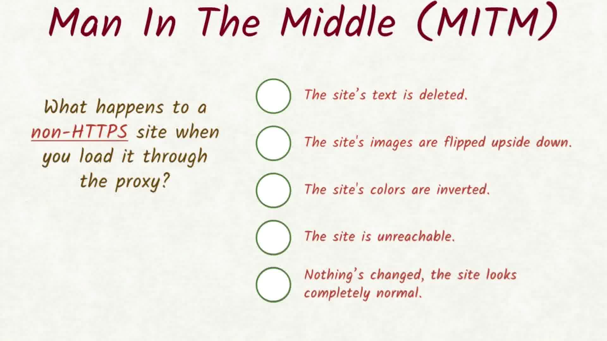

03. MITM Quiz 1
MITM Quiz
Question:
Start Quiz:

Solution:
INSTRUCTOR NOTE:
Instructor Notes
Go to the settings in Chrome, search for Proxy and click the Proxy Settings button and set your HTTP and HTTPS Proxy settings to localhost Port 13370.
Chrome Setup
How to setup Chrome
On Mac:
- go to Chrome's settings and search for "proxy"
or copy and paste this into Chrome's address barchrome://settings/search#proxy - click the "Change proxy settings…" button

- enable the HTTP proxy
- set the Web Proxy Server to the
localhostand the port to8080- enable the HTTPS proxy
- set the Secure Web Proxy Server to
localhostand the port to8080 - click "OK" to verify the changes to the Proxy settings
- click "Apply" for these changes to take effect
Proxy settings in System Preferences

Windows Setup
On Windows:
- Follow steps 1-2 from Mac instructions
- Click on LAN Settings button
- Enable Use a proxy server for your LAN
- Set the Address to
localhostand the Port to8080 - click "OK" to verify the changes to the Proxy settings
- click "OK" for these changes to take effect
LAN Settings
Proxy
linux
On Linux:
On Linux, Proxy setting is done via the command line.
Run the following commands
$ export http_proxy=http://localhost:8080/
$ export https_proxy=$http_proxy
$ chromium